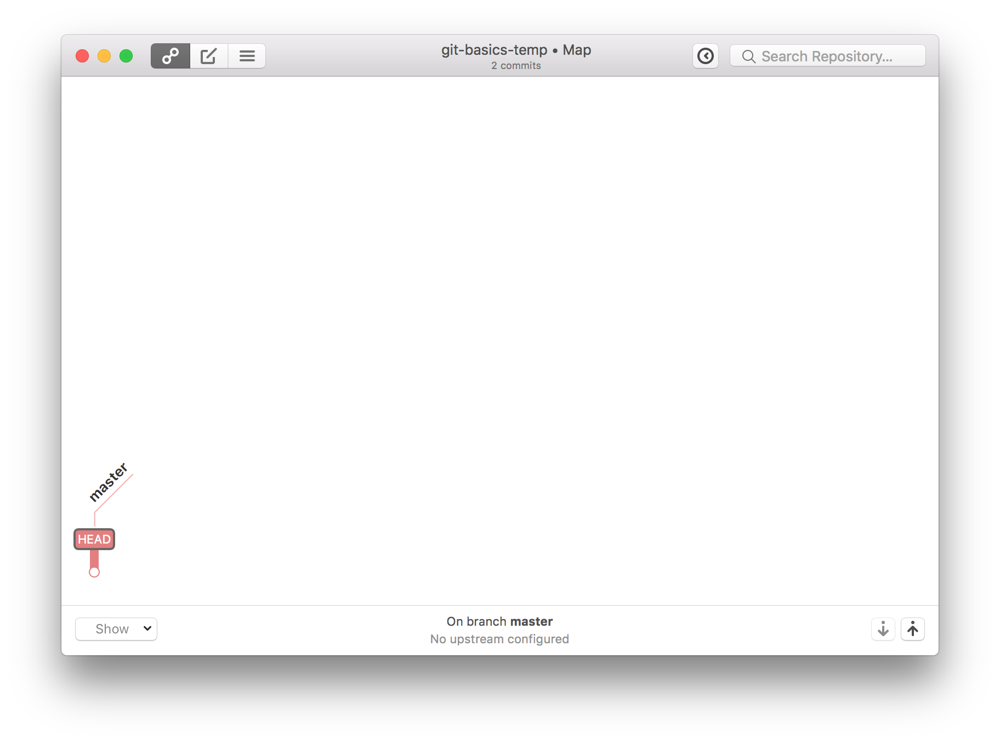
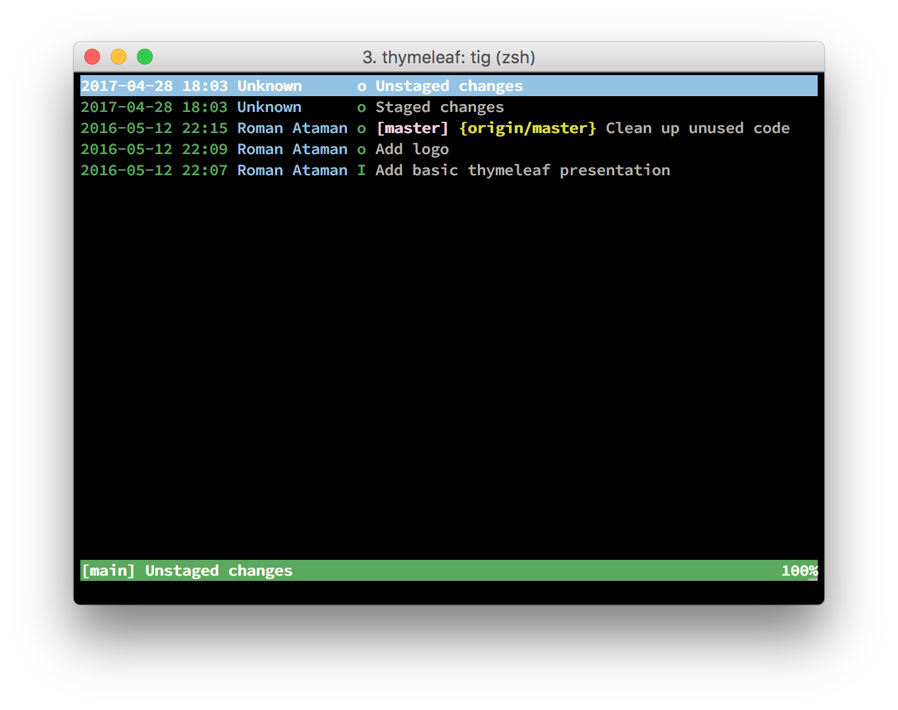

Git Basics
 Roman Ataman / adorsys GmbH / 2017
Roman Ataman / adorsys GmbH / 2017
Auf der CLI
weil...

Für wen?
First things first
Tools
Git
Auf OSX Teil der Xcode Tools, via `brew` oder git-scm.com. Testen obs geht:
~/junk/git-basics-temp master
❯ git --version
git version 2.11.0
Gitup
Git UI mit Live aktualisierung (verwenden wir gleich im Workshop).
tig (Optional)
Git Commandline UI
Config
Wir brauchen ein paar wenige sinnvolle defaults, um im Team arbeiten zu können.
Optional: Editor(mit dem man nicht verzweifelt)
- VS Code herunterladen und nach Applications entpacken
- 'code' Command in PATH installieren
vscodeals Editor konfigurieren
Optional: EditorConfigfile
Tweaks für OSX
Done!
Was ist Versions-kontrolle? (VCS)

Warum VCS benutzen?
- Wer hat was, wann, warum gemacht?
- Verwaltung von stabilem Text
- Parallele/konkurrierende Arbeit an Text
- Parallele Arbeit von vielen Menschen an einem Projekt
- Mehrere Versionen gleichzeitig managen
VCS Geschichte
Was ist Git?
- Entwickelt von Linus Torvalds
- War unzufrieden mit bestehenden Systemen
- Start Entwicklung 03.04.05
- Announced 06.04.05
- Self-Hosted 07.04.05
- SCM für Linux 06.06.05
- Heute De-Facto-Standard
DVCS
- Größter Unterschied zu bestehenden Systemen
- Komplette Historie lokal (self contained)
- Funktioniert offline
- Kein Master/Slave mehr per Design
- Nur noch per Konvention
Vorteile
- GitHub
- Performance, Stabilität, Offlinefähigkeit
- sehr einfaches/günstiges Branchen
- Quasi-Standard
- Extrem mächtig
Nachteile
- Sehr technisch, linuxlastig (CLI)
- Interface teilweise inkonsistent
- Einstiegshürde
- Extrem mächtig
Themen
Repository
Commit
Gute Commit Messages
- Betreff (~50 Zeichen max, imperativ*)
- Leerzeile
- Detailbeschreibung (~72 Zeichen max / Zeile)
- Am Ende links auf JIRA
*Imperative mood just means “spoken or written as if giving a command or instruction”. A few examples:
- Close the door
- Clean up your room
- Fix that bug where everything breaks

Simplify serialize.h's exception handling Remove the 'state' and 'exceptmask' from serialize.h's stream implementations, as well as related methods. As exceptmask always included 'failbit', and setstate was always called with bits = failbit, all it did was immediately raise an exception. Get rid of those variables, and replace the setstate with direct exception throwing (which also removes some dead code). As a result, good() is never reached after a failure (there are only 2 calls, one of which is in tests), and can just be replaced by !eof(). fail(), clear(n) and exceptions() are just never called. Delete them. Fixes XY-123 See also XZ-678https://chris.beams.io/posts/git-commit/
Index/Staging Area

Stash
Log
Branches
History
Merge
FF vs Non-FF
Konflikte
Tags
Clone
Pull/Fetch
Push
Remotes/Tracking Branches
Extras
- Rebase
- Merge-Requests